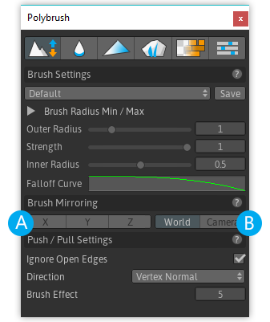

Sculpting with a single brush is pretty great, but what if you want to take things to the next level?
Brush Mirroring is the answer. You can control up to four brushes in the scene simultaneously using this feature.
Brush Mirroring Options

A) Mirroring Axis
The first three toggles (A) determine the coordinate space that the axis will be calculated from (X, Y, or Z).
Anywhere from 0 to all 3 axis can be chosen.
B) Mirroring Coordinate Space
The second toggleset sets the axis to mirror across.
In World the axes are always the same, matching Unity's world coordinates Camera uses the Scene camera's transform as the coordinate to cast axes.